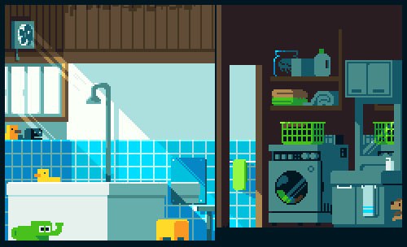

<div class="mission" style="">
    
    <div class="container">
        
        <div class="text">
            <div class="details">Votre lave-linge n'est pas entièrement rempli. <br> <br>
                Vous préférez : <br>
                Attendre les prochains jours qu'il se remplisse pour le lancer. <br>
                Ou l'envoyer en demi-charge (qui consomme moins) puis l'envoyer <br>
                encore en demi-charge les prochains jours ?
            </div>
        </div>
        <div class="answers">
            <a [routerLink]="['/missionFive']" routerLinkActive="active" >
                <p class="answer one">Demi-charge</p>
            </a>
            <a [routerLink]="['/missionFive']" routerLinkActive="active" >
                <p class="answer two">Charge complète</p>
            </a>
        </div>
    </div>
</div>
